新智元报道
新智元报道

9月份，是一个神仙打架、周周洗牌的修罗场。
全球头部 AI 实验室密集发布新一代旗舰，国内厂商同步提速迭代。
在这场每周都有「重磅」的混战中，有一家模型厂没有选择跟着节奏「小步快跑」——
它攒了一个大的，然后一把摊在桌上。
这家公司就是阶跃星辰。9 月 20 日，他们发布了新一代旗舰基座模型 Step 5 Preview。
它在告诉整个行业：我回来了。

在 Artificial Analysis Intelligence Index（AA 智能指数）中，Step 5 Preview 取得了 44 分。
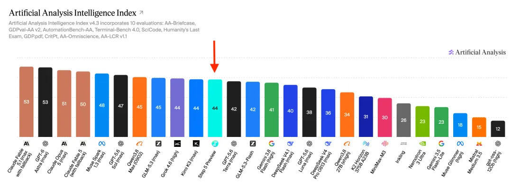
拉一张横向对照表：Claude Fable 5.1 领跑全球（53 分），GPT-6 Astra 紧追其后（52.8）。
Step 5 Preview 的 44 分，把阶跃送进了全球开源模型前三。
而且这个位置的「性价比」很扎眼：每百万 token 输入 1 美元、输出 2.7 美元，跑完一道 AA 智能指数任务平均只要 0.71 美元。
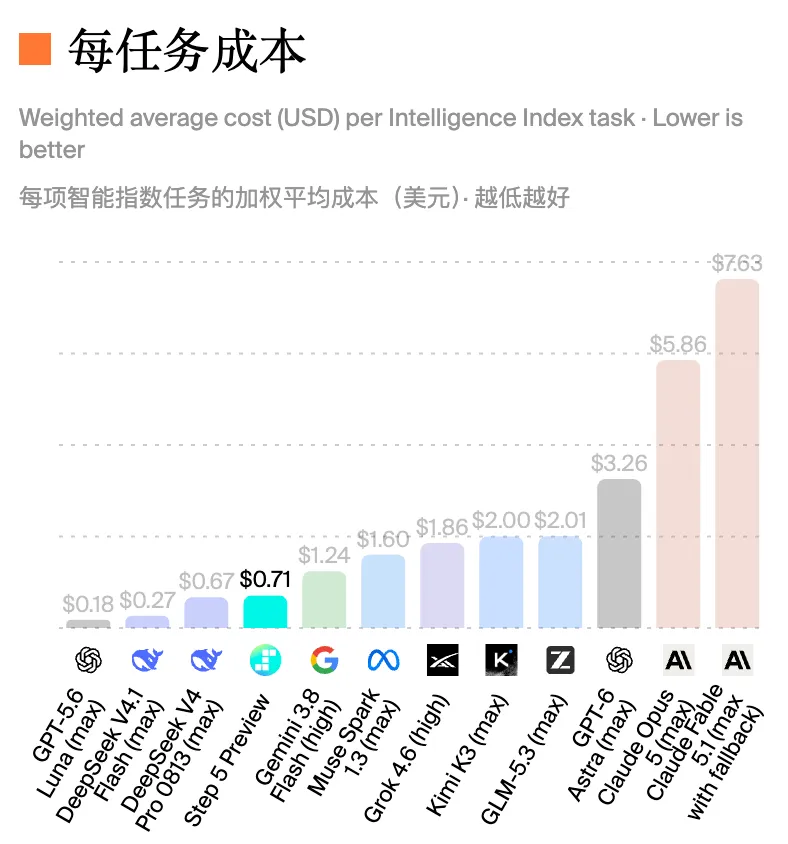
在 AA 官方的「智能指数 vs 单任务成本」图上，Step 5 Preview 创造了新的帕累托前沿——
同样的智能水平，没有比它更便宜的；同样的价格，没有比它更聪明的。
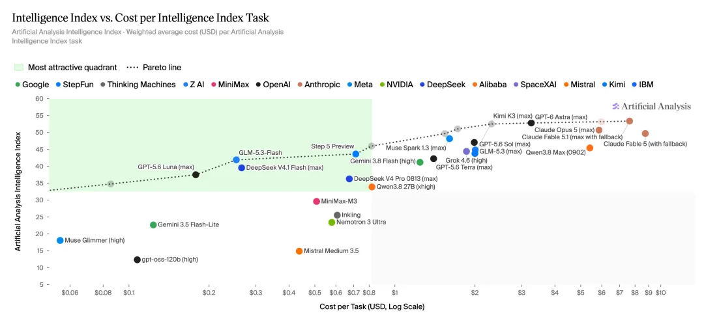
这个成绩的含金量，在今年 9 月变得更高了。
AA 智能指数在月初刚升级到 v4.2：两项新评测加入、GPQA Diamond 被淘汰（太容易了）、私有测试集权重翻倍到 40%。
靠背题刷分的时代过去了，模型必须在从未见过的任务上展现真正的推理力。
而 Step 5 Preview 还有一个不容忽视的标签：开源。
在当前 AA 榜单前列，绝大多数是闭源模型。Kimi K3 以开源权重身份杀入全球前五已被视为里程碑，Step 5 Preview 是又一个挤进核心竞争区的开源选手。
这意味着中国开源模型的能力天花板，仍在加速上移。
Step 5 Preview 对准的场景很明确：Coding、软件工程、专业知识和金融场景——
所有需要「长上下文、多轮工具调用和持续执行」的复杂任务。
它原生支持 1M 上下文。一整个代码仓库、一整个数据室，都能装进一次对话里。
这些场景有一个共同特征：不是回答一个聪明的问题，而是让模型像一个靠谱的员工一样接手一个项目。
拆解任务、调用工具、根据中间反馈修正方案，最后交出一份能用的结果。
说到这里，我们拿到了内测资格，也就是前段时间被调侃在模型名称上大幅领先的 water18，设计了几个贴近真实工作场景的实测方向，来看看 Step 5 Preview 到底能走多远。

来测一下代码能力。
给它的题目是：单文件 HTML、只准借 three.js 一支画笔，做一个街机风格的低多边形 3D 飞行小游戏，要能玩、要好看。
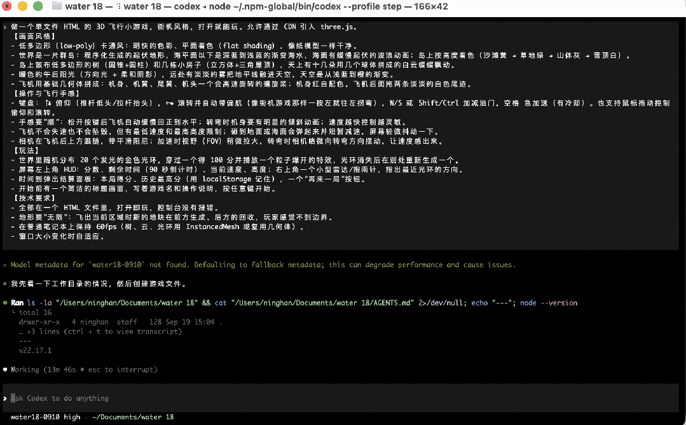
Step 5 Preview 用了 20 多分钟，写了一个上千行的 HTML 文件，打开就能飞。
画面好看。天空和海水不是贴图，是它自己写的着色器：海面真的在起伏，阳光在浪尖上闪，远处融进雾里。
操作顺手。一按左就拐弯，松手自动回正，加速时视野拉开、转弯时镜头跟着甩——速度感全在手上。撞到海面弹一下、抖一下，不会死，节奏不断。
会自己加东西。提示词只说「金色光环」，Step 5 Preview 给每个光环加了一道直冲天际的光柱，几百米外就知道往哪飞，追环立刻有了节奏。
穿环粒子爆开、+100 飘字、Boost 冷却条、90 秒结算记最高分，一样不少。
这就是「生产级」：写出来的东西不用改，直接能玩。
这是一道「体力活」：12 份中英文合同，对照法务部 10 条标准逐条审，再算续约日期、写修订函、给采购部总结。
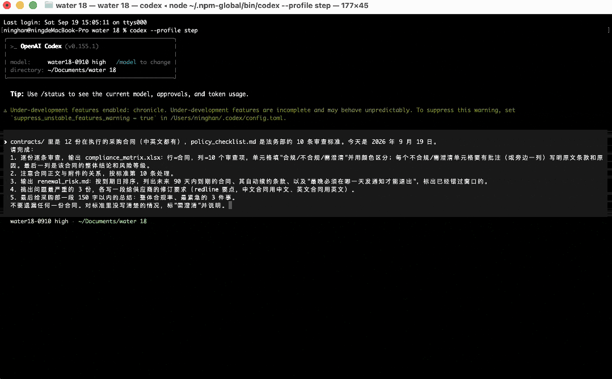
人做这件事，最容易出问题的不是前三份，是第八份以后开始走神。
Step 5 Preview 交了三个文件，我们逐格对答案。
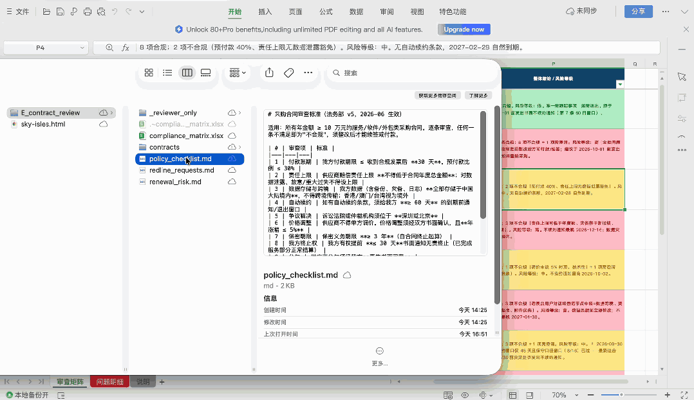
一个没漏。 120 个判断全部落格，26 处违规全中。
它额外标出的 12 处，我们回头看标准原文，它是对的——比如责任上限写着「以年度金额为限」，看起来合规，但标准还要求数据泄露、重大过失不设上限，这一层它没放过。
第 12 份合同审得和第 1 份一样细。
藏在附件里的坑，没躲过它。 两份合同正文干净，违规只写在附件里，它照样抓出来。
日期不是算出来的，是想出来的。 一份合同今天已经错过退出窗口，它标红并给出还能补救的最后一天；另一份年底才到期、按题目不该出现，但通知期 10 月 2 日就关，它主动单列出来。
三个文件互相咬合。 修订函里给供应商的最后期限，就是续约清单里算出的最晚通知日；给采购部的 142 字总结，三件最急的事和前面的日历一一对应。
能做完，能做对，最后一份和第一份一样认真。这就是长程 Agent 的意思。
我们给 Step 5 Preview 九份关于同一家公司的材料。
融资额、估值、营收、交付量、员工数，没一个数字是统一的。
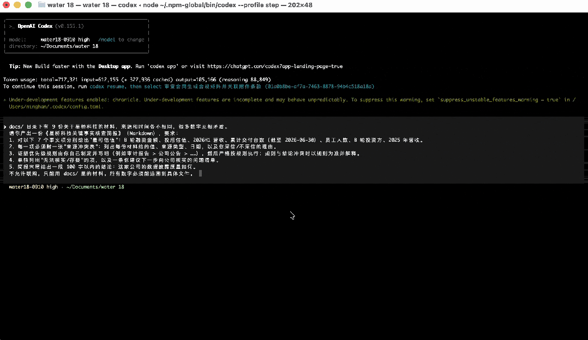
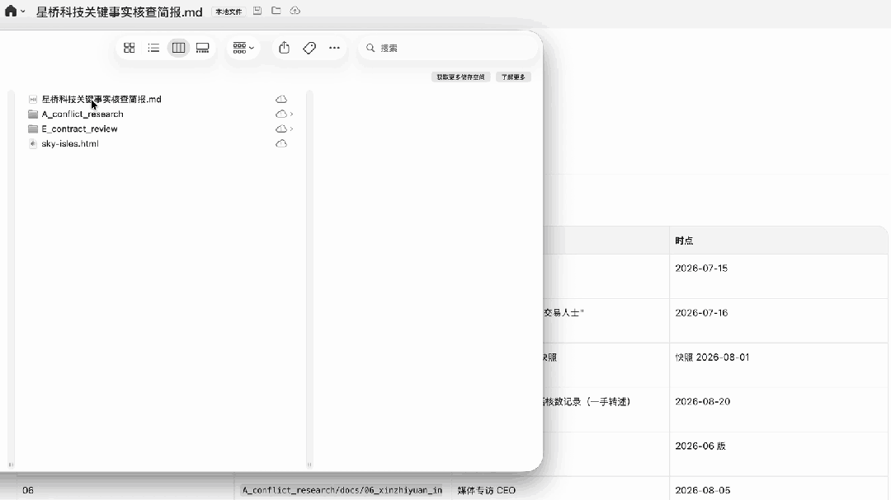
它先定规矩，再动手。 审计报告 > 公司更正声明 > 一手核实 > 官方新闻稿 > BP > 数据平台 > 匿名帖，七级优先级，外加「口径优先于数值」「时点对齐」等六条辅助规则。
七个事实项全部答对，35 处引用精确到文件和行号。
规则和直觉打架时，它站规则。 CEO 本人在专访里说估值 32 亿，两份官方材料互相印证；它仍按规则取 30 亿，因为更正声明更晚，且内部邮件解释了 32 亿是怎么算出来的。
还发现了我们没发现的问题。新闻稿说「同比增长 210%」，它反推出去年上半年只有 0.49 亿——意味着 69% 的营收压在下半年，没有任何材料能解释。
这被它翻出来列为「最脆弱的一处」。
读完、想清、按规矩判、把推理过程摊开——这才是 Deep Research。
最后，我们给 Step 5 Preview 一个 B 轮公司的数据室：利润表、发票台账、银行流水、股权表、供应商名录、创始人 deck。
任务是替投委会写一份尽调备忘录，外加一份带公式的勾稽底稿。
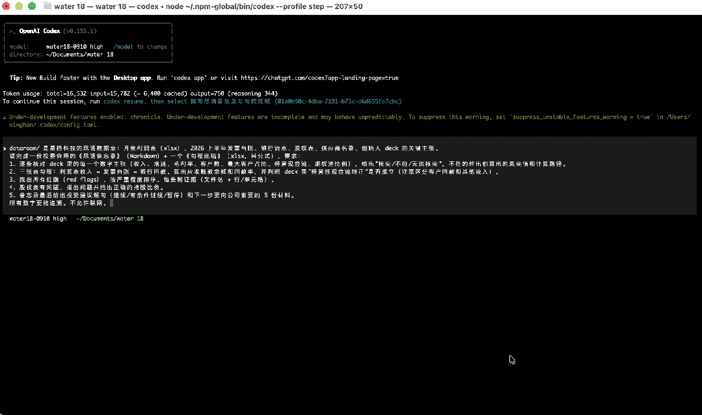
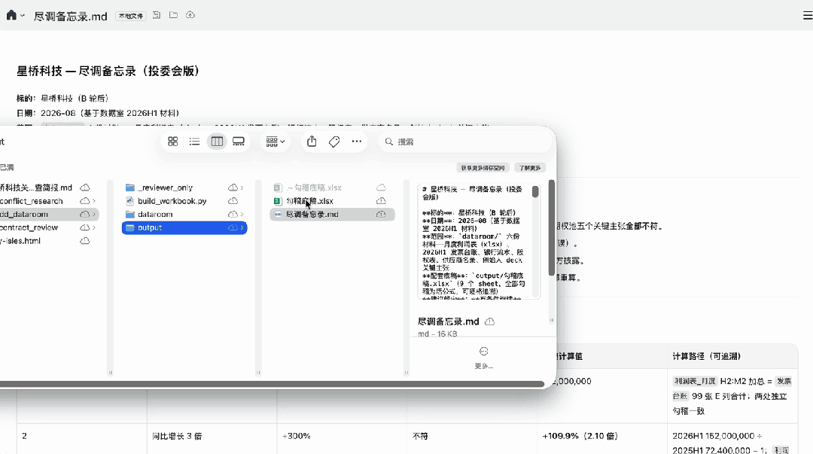
数字一分不差。收入 1.52 亿、回款 8,344 万、应收 6,856 万、净亏 934 万——全部和真值精确到元。
底稿 9 个 sheet、1,030 个活公式，每个数都能从原表一路点回去。
核出 6 条不符。 增速不是 3 倍是 2.1 倍，毛利率不是 45% 是 38%，客户不是 47 家是 33 家，最大客户占比不是「不到 20%」而是 40%。
最关键的是「经营现金流转正」：它把 500 万股东借款和 120 万政府补贴从流入里剔出去，算出上半年实际净流出 1,384 万——就算把这两笔都算上，还是负的。
三跳连出一笔关联交易。 银行流水里每月 53 万付给一家咨询公司，供应商名录写着法人叫李静，deck 团队介绍里有一句「周明配偶李静负责行政外包」。三份材料各自看都正常，连起来就是 CEO 配偶年收 640 万咨询费，没有披露。
还挖出了我们没埋的。 12 个月毛利率恒定在 38% 和 34% 两个值上没有一丝波动，它判断「疑似成本按收入倒算」；说明它不是在对答案，是真的在审。
最后给的是「有条件继续」，附 5 个先决条件和 5 份要索取的材料。
会算、会串、会怀疑、会给建议——一个专业工作流该有的，它一样没少。
这一关不是我们随手挑的。
金融是阶跃给 Step 5 Preview 划的重点考场：它牵着宏观、政策、行业和公司，最考模型的综合能力。
阶跃自建了三项 FinStepBench 评测，分别考实时检索、估值建模和完整研究流程；外部再用 FrontierFinance——220 道专家题、11,543 项评分标准、六类投资场景。
四项测试跑下来，Step 5 Preview 的表现均取得不错水平。
上面那份尽调备忘录，只是这个能力的一次现场演示。
Step 5 Preview 采用稀疏 MoE 架构，总参数 600B，激活参数仅 27B，原生支持文本与视觉输入，上下文长度 1M。
在当下这个「万亿参数」遍地走的时代，Step 5 Preview 的参数规模并不是最大的。
但阶跃的技术判断很清楚：模型的「大」不是目的，是手段。
具体怎么做？阶跃和我们透露了几项关键设计：
Narrow but Deep：让信息在长 Prefill 中传播得更多。
背后的直觉是：复杂 Agent 任务里存在大量多跳依赖，频繁的工具调用又会带来很长的 Prefill。
由于 Prefill 阶段的信息需要沿时间和网络深度逐层传递，网络深度不足，可能限制隐式多跳推理的完成。
因此，Step 5 Preview 采用「窄而深」的架构，直接将 Transformer 深度增加至 92 层，为长 Prefill 中的信息传播提供更长路径。
更深也更难训。92 层的网络会撞上数值爆炸、梯度尖峰这些老问题，阶跃对 Hidden State、RMSNorm 和梯度做了专门优化，才让它稳定训下来。
多层面稀疏设计：Sparse MoE ++ Sparse GQA。
除了 MoE 本身的专家稀疏激活，Step 5 Preview 引入了Sparse GQA。
当模型处理一个百万 token 的超长上下文时，不需要让每一个 token 都与所有 token 做注意力计算。
Sparse GQA 通过稀疏索引，只挑相关的历史信息进入计算——让模型学会「只看该看的地方」，大幅降低长上下文的计算开销。
从算法稀疏到系统效率的打通。 这是最容易被忽视、却最影响实际体验的一环。
算法上的稀疏，并不天然等于系统上的更快。
稀疏计算对 GPU 的索引和数据搬运模式提出了不同要求，可能把理论上的节省吃掉。
为此，Step 5 Preview 进一步通过 Block-wise Token Merging，将 Indexer 与 Top-k Selection 的成本降低 8×；同时合并相邻 Token 高度重叠的 Top-k 结果，改善碎片化计算造成的 GPU 利用率问题，改善碎片化计算造成的 GPU 利用率问题。
面向 Agent 的训练体系。 在 Step 5 Preview 的数据生产体系中，Agent 不只负责生成样本，还参与知识探索、任务设计、难度与多样性控制，以及整个流程的动态编排。
系统同时加入 Anti-hacking 检查，避免模型利用任务或评测漏洞「看起来成功」，却没有真正解决问题。
整个流程也有明确分工：专家提供原则和关键判断，Agent 负责动态编排，确定性操作交给代码和工具。
基于这套体系，最终构建出百万级、可验证的高难任务环境，覆盖科学推理、软件工程、机器学习研发和专业工作。
最后，随着 Agent 任务不断变长，强化学习也需要适应更长的任务时域。
Step 5 Preview 从训推一致性、训练效率和长轨迹学习三个方面进行优化。
并且在算法侧，进一步把 Context Compaction 和更细粒度的奖励分配纳入训练，让 Agent 能够在有限上下文中持续推进更长任务。
把这四个选择叠在一起看，你会发现一条清晰的技术主线：在智能、成本、速度和模型规模之间，寻找一条最优的帕累托前沿——
不追求单一维度的极端值，而是追求综合最优。
这条路线不是 Step 5 Preview 才开始的。
回溯阶跃过去三代基座模型，「效率优先」是一条贯穿始终的技术主线。
Step 3.5 Flash： 196B 总参、11B 激活的稀疏 MoE，定位 Agent 大脑。发布后迅速被极氪 8X 搭载，成为驱动吉利「超级 Eva」整车智能体的核心模型。
Step 3.7 Flash： 198B 总参、约 11B 激活，加入原生视觉能力。发布两天内冲到 OpenRouter Trending 全球第二，随后拿下 HuggingFace 多模态热榜第一、ClawEval 多模态榜全球第一。
Step 5 Preview： 600B 总参、27B 激活，同样的 MoE 基因，同样的效率优先思路——激活比例甚至比 Flash 系列还低——但能力等级跃升到旗舰水平，上下文从 256K 拉到 1M。
三步走下来，阶跃证明了一件事：「高效率」和「高智能」不是对立的。Flash 级别的效率设计，可以一路延伸到旗舰级别的能力上限。
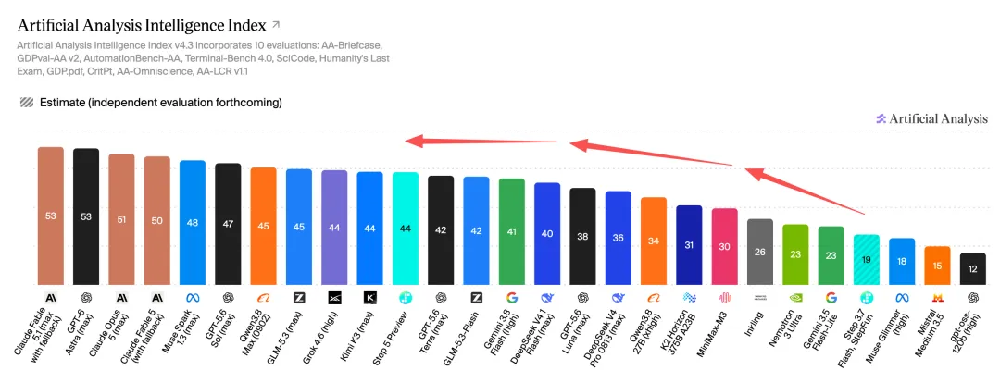
一年前行业还在争论「做大做强 vs 做小做便宜」，似乎旗舰和效率是两条平行线。
但 2026 年正在改写这个叙事。DeepSeek 用极致稀疏打出了极致性价比，千问用 Flash 系列服务了海量开发者，而阶跃用 Flash 到旗舰的连续演进，证明效率路线的纵深——
它不止能做「便宜好用的小模型」，也能做「又强又高效的大模型」。
大模型竞争的下一章，正在从「规模 Scaling」走向「能力 × 效率」的综合竞争。这恰恰是阶跃过去一年多持续押注的方向。
真正让阶跃值得重新审视的，是它完成的一次体系级升级——三张牌几乎同时亮出来。
第一张牌：前沿基座。 Step 5 Preview 用 44 分的 AA 智能指数、全球开源前三的位置，重新确认了阶跃的旗舰模型研发能力。
第二张牌：全模态矩阵。 就在 Step 5 Preview 发布前几天，阶跃推出了 StepAudio 3 系列：五款语音模型一次性到位。
其中 StepAudio 3 Realtime 以 98.9% 综合得分拿下 Artificial Analysis 语音交互榜全球第一，语音推理准确率 99.7% 同样全球第一；ASR 的词错误率仅 1.7%，并列全球第一。
加上更早发布的 Step Edge 端侧模型系列、StepGUI 界面操作模型、Step1X 图像编辑模型，阶跃的全栈布局愈加完整。
第三张牌：终端量产。 这是阶跃最独特、也最容易被低估的一张牌。
模型手机装机量超过 4200 万台，日均服务近 2000 万人次，覆盖超 50% 的头部中国手机品牌。
在汽车端，与吉利的合作已深入整车智能体层面。
7 月 WAIC 上发布的 STEPX Neo：搭载智能体原生操作系统 Step AOS 的大模型原生手机，通过了国家标准 L3 级测试（目前最高级别），斩获 WAIC 2026「镇馆之宝」。
4200 万台装机量和日均 2000 万次调用意味着，阶跃的模型在真实噪声、复杂环境、低算力、低延迟、高并发条件下，持续经受着检验。
这是纯 API 模型公司很难拥有的数据飞轮——真实世界的反馈会反过来驱动模型迭代。
而阶跃的差异化，就在这里：「AI + 终端」这条几乎没有同行在走的路。
Coding Agent 的爆火已经证明了 Agent 商业化的可行性。
但下一个更大的战场可能是 Personal Agent。
它的消费场景远比写代码广阔，涉及十几亿消费者的日常生活，要处理大量意图模糊、链路冗长、高度个性化的任务。
在这个战场上，AI 原生硬件是最关键的入口。
阶跃用 STEPX Neo 和「模型 + 系统 + 终端」的三位一体闭环，提前卡了位。
拉长时间看，全球大模型竞争仍在高速演进期。
一年前，说中国开源模型能进 AA 全球前五，很少有人信。但 Kimi K3 做到了。
半年前，说中国模型在 OpenRouter 上的调用量会超过美国，听起来也不太可能。但截至 2026 年 9 月，中国模型整体份额超 45%，美国约 43%。格局已被改写。
Step 5 Preview 的发布，是这种高速演进又一个注脚。
它让市场重新认识到：大模型竞争已是一场涵盖基础模型能力、全模态体系、终端落地、商业闭环的系统性竞赛。
Step 5 Preview 不只是刷新了一项成绩，更把阶跃推入了生产级 Agent 模型的核心竞争区间。
在「效率」这条路上，阶跃走得足够远、足够深，以至于这条路本身变成了一种竞争优势。
编辑：所罗门